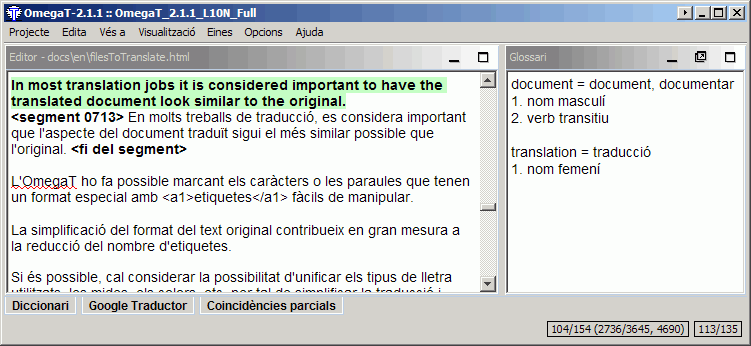
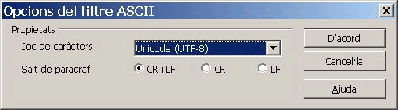

Glossaris
Els glossaris són fitxers creats i actualitzats manualment per tal d'utilitzar-los amb l'OmegaT.
Si un projecte de l'OmegaT té un o més glossaris, i el segment actiu conté termes que apareguin als glossaris, es mostraran automàticament al visualitzador de glossaris.
Ús
Per utilitzar un glossari existent, col·loqueu-lo dins de la carpeta dels glossaris (per defecte, «/glossary») un cop creat el projecte. En obrir un projecte, l'OmegaT detecta automàticament els fitxers de glossari d'aquesta carpeta. Si l'OmegaT troba algun terme del segment actiu als fitxers de glossari, el mostrarà a la subfinestra Glossari:

La paraula d'abans del signe = és el terme de partida, i la traducció és la paraula o les paraules de després del signe =. Cada entrada del glossari pot incloure un comentari (vegeu «verb transitiu» al segon terme). La funció de glossari només troba coincidències exactes amb l'entrada del glossari (és a dir, no troba formes declinades, etc.). Podeu afegir termes nous manualment als fitxers de glossari durant la traducció (per exemple, amb un editor de textos), però les entrades noves que hi afegiu no es reconeixeran fins que torneu a carregar el projecte.
Format de fitxer
Els fitxers de glossari són simples fitxers de text net amb una llista de tres columnes delimitades per tabuladors que conté els termes de partida i d'arribada a la primera i segona columna, respectivament. La tercera columna es pot utilitzar per incloure-hi informació addicional. Els fitxers de glossari poden tenir la codificació per defecte del sistema (que s'indica amb l'extensió .tab) o en format UTF-8 (amb l'extensió .utf8). És recomanable utilitzar la codificació Unicode (UTF8).
Com crear glossaris
Aquest mètode és senzill i no dóna problemes, si se segueixen les instruccions amb atenció. Necessiteu l'OpenOffice.org Writer; per tant, si encara no ho heu fet, baixeu i instal·leu l'OpenOffice.org. Inicieu l'OpenOffice.org i obriu un document de text nou, o bé inicieu l'«OpenOffice.org Writer».
Al document buit, escriviu els termes del glossari d'aquesta manera: un terme de la llengua de partida, tabulació, el terme en la llengua d'arribada, tabulació, un comentari o explicació de l'entrada, i un retorn. La tabulació correspon a la tecla de tabulació de l'esquerra del teclat. Si no voleu afegir cap comentari, podeu ometre la segona tabulació. Un «terme» pot ser una sola paraula o tota una frase. A la segona línia, escriviu el segon terme i la traducció corresponent.
Quan hàgiu acabat d'escriure tots els termes, tindreu dues «columnes» de termes: els termes en la llengua de partida a l'esquerra i els termes corresponents en la llengua d'arribada a la dreta (i potser una tercera columna que conté comentaris i explicacions). Els caràcters de tabulació (→ en l'exemple següent) i de retorn (¶ ) es poden visualitzar fent clic a la icona ¶ de la barra d'eines estàndard de l'OpenOffice.org Writer. El següent és un exemple d'un glossari de l'anglès al català:
advanced→avançat -ada→adj.
file→fitxer→masc. (no: arxiu)¶
key→tecla, clau→fem.
e-mail address→adreça electrònica→fem. (abrev. a/e)¶
NO utilitzeu la funció de «columnes» de l'OpenOffice.org per crear columnes; simplement separeu cada terme de partida i d'arribada amb una única tabulació.
Quan hàgiu acabat d'escriure les entrades, seleccioneu Fitxer > Anomena i desa. Al quadre «Nom del fitxer», escriviu un nom per al fitxer de glossari, seguit de l'extensió «.utf8» (per exemple, «glossari.utf8»). A «Tipus de fitxers», seleccioneu «Text codificat (.txt.)». Desactiveu la casella «Extensió automàtica del nom del fitxer» i activeu «Edita els paràmetres del filtre»:

Confirmeu prement D'acord. S'obre un quadre de diàleg amb dues opcions: «Conserva el format actual» i «Desa en format ODF». Seleccioneu «Conserva el format actual» per desar el fitxer en format de text codificat. Al diàleg Opcions del filtre ASCII (que es mostra a continuació), seleccioneu «Unicode (UTF-8)» com a joc de caràcters:

Confirmeu fent clic a D'acord.
Després de crear un projecte de l'OmegaT, copieu o mogueu aquest fitxer a dins de la carpeta \glossary del projecte. Si ja teniu obert el projecte, torneu-lo a carregar després d'haver copiat el fitxer de glossari. Podeu fer canvis al fitxer de glossari mentre s'està utilitzant al projecte. Els canvis que realitzeu al glossari es detecten automàticament cada segon i les modificacions es carreguen de forma transparent en segon pla. Per tant, no cal tornar a carregar el projecte després de desar el fitxer de glossari modificat.
En obrir un segment que contingui algun terme del text de partida, la subfinestra del glossari mostrarà les entrades del glossari (o dels glossaris, ja que en podeu utilitzar més d'un i també poden estar en subcarpetes dins de glossary) que s'hagin trobat al segment de partida.
Ús del Trados Multiterm
Els glossaris creats mitjançant la funció d'exportació de text del Trados Multiterm poden utilitzar-se com a glossaris de l'OmegaT sense cap modificació, sempre que tinguin l'extensió de fitxer .tab i que els dos primers camps siguin els camps de terme de partida i d'arribada, respectivament. Si exporteu mitjançant l'opció del sistema «exportació delimitada per tabuladors», haureu de suprimir les primeres 5 columnes (Seq. Nr, Date created etc.) que apareixen abans del dos termes que us interessen.
Problemes comuns dels glossaris
- Problema: No es mostra cap terme del glossari.
- Causes possibles:
- No hi ha cap fitxer de glossari a la carpeta dels glossaris (per defecte, «glossary»).
- El fitxer de glossari és buit.
- Els termes no estan separats amb un caràcter de tabulació.
- El fitxer de glossari no té l'extensió correcta (.tab o .utf8).
- No hi ha cap coincidència EXACTA entre l'entrada del glossari i el text de partida del document (per exemple, quan l'entrada del glossari és en plural).
- El fitxer de glossari no té la codificació correcta.
- No hi ha cap terme al segment actiu que coincideixi amb un terme del glossari.
- Heu corregit algun dels problemes anteriors, però no heu tornat a carregar el projecte.
- Problema: A la subfinestra del glossari, alguns caràcters no es mostren correctament (però aquests mateixos caràcters es mostren correctament a la subfinestra de l'editor).
- Causes possibles:
- L'extensió i la codificació del fitxer no coincideixen.